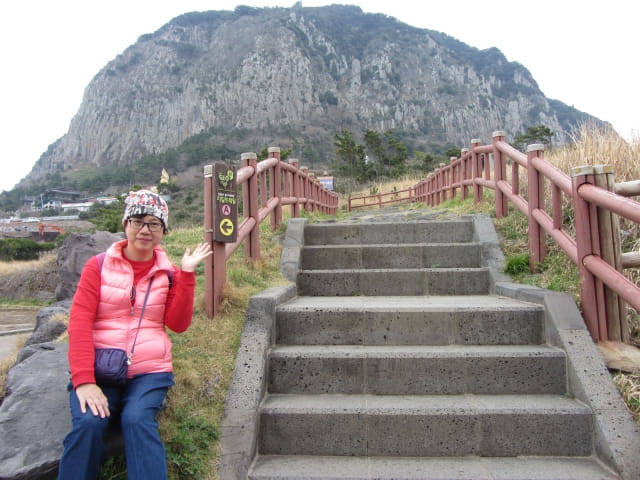
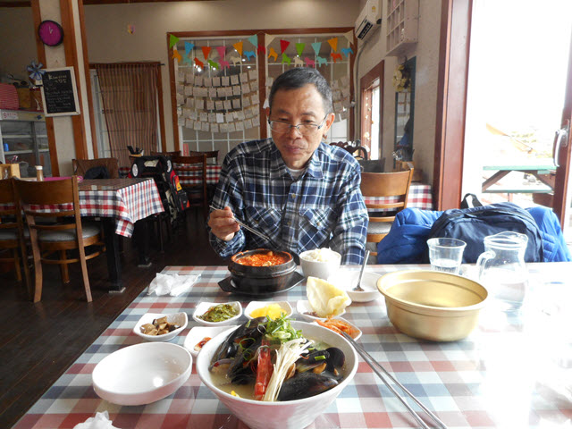

離開山房山山腰的山房煙台, 循石階一直往下走, 沿途風景十分優美, 走走看看, 很快便來到山房山下的油菜花田, 這裡也是龍頭海岸的售票亭及入口。走了一整個上午的路, 這時肚子已經不斷的發出咕嚕咕嚕的聲音, 便決定先在附近的餐廳吃午飯, 然後才慢慢的遊覽龍頭海岸。根據經濟, 韓國所有旅遊景點都設有餐廳的, 所以應該不愁找不到地方吃午餐, 只是價錢問題。

看見油菜花田的陡坡上有幾間好像餐館的房子, 便朝那裡走去。
沿商店區走。
經過一間優美、歐陸設計的房子, 一樓是一間餐廳, 餐廳的名稱是「KIM 여사의 밥상」, 看見環境很好, 便馬上決定在這裡午餐。
餐廳的裝修幽雅, 十分舒適。
很多食客的留這, 應該都是讚美的說話吧!
老闆可以用簡單英文溝通, 點菜沒有太大問題。她叫了一碗海鮮, 有滿滿好像青口的貝殼和蝦, 份量甚多, 只是8,000韓元。

我叫了一客海鮮豆腐鍋, 有貝殼、蛋和豆腐, 只是7,000韓元, 以這樣食物的質素, 真是物超所值!
一邊欣賞窗外山坡下的油菜花田和海灣優美景色, 一邊享用美食, 真是一生一大快事!
用完午餐, 心情十分滿足, 便循原路慢慢走回龍頭海岸的售票亭及入口, 順道在沿途的商店逛逛。